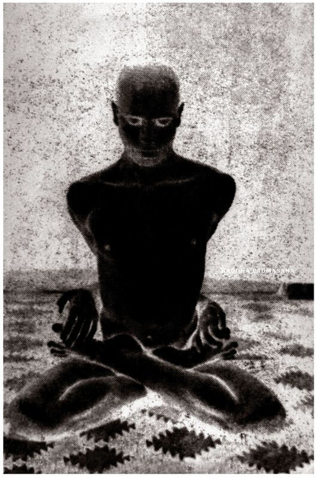
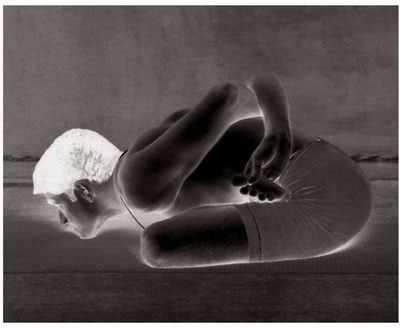
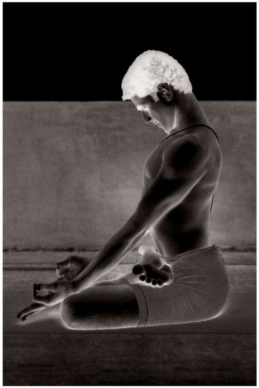

Some people call this asana Kapalasana or Viparita Karani but, as it is most commonly known as Shirshasana, we have called it so as well. Shirshasana has thirteen vinyasas; the 8th constitutes its state. (Pregnant women should not practice this asana.)
METHOD
While coming from the 6th to the 7th vinyasa of the first Surya Namaskara and doing puraka, sit on the knees, lock the fingers together and place the elbows on the floor; this is the 7th vinyasa. Then, doing rechaka and then puraka, place the crown of the head on the floor, interlocked hands cupping the back of the head and, doing rechaka and puraka again, straighten the legs and, keeping them together and straight, lift them up with the power of the arms, tighten the body, point the toes, and keep the body erect using the strength of the arms; this is the 8th vinyasa, during which rechaka and puraka should be done slowly and as many times as possible. Then, doing rechaka slowly, bring the feet back down onto the floor, rest with the buttocks on the heels and the head on the floor for two minutes. Next, doing puraka and then rechaka, jump back into the 4th vinyasa of the first Surya Namaskara; this is the 9th vinyasa. The next vinyasas are as those described above.
Aspirants should note that merely putting the head down and legs up, and then standing upside down is not Shirshasana; very simply, this is wrong. Indeed, no one should be deluded into thinking that Shirshasana is an easy asana. The proper method for it must be carefully learned. For example, the entire body must stand upside down on the strength of the arms alone. If the full bodily burden is carried by the head, the circulation of the blood from the heart, which is flowing properly to the limbs, will be prevented from making its way to the subtle nadis in the crown of the head, which is pressed to the floor. Then, following the descent from the state of the asana, there is the possibility that the subtle nadis in the brain could become spoiled by the inrush of blood when the head is lifted. This could impede bodily and intellectual growth, and lead to delusions, mental abnormalities, illness, or a shortened life. Aspirants should therefore practice this asana knowledgeably and with great care. Some people, ignorant of the proper method, practice Shirshasana after seeing it in a book or photograph, and so subject themselves to numerous problems, and even inspire fear in others who practice the asana correctly, as I have witnessed from my own experience. I have also come across situations in which many ailments resulting from the improper practice of this asana have been cured by an aspirant’s learning the method properly. Thus, let me repeat again that aspirants should take great care with Shirshasana.

Some say that practitioners should stay in this asana for only two to five minutes; otherwise, harm could come to them. It must be stressed, however, that this is not correct, as the following scriptural saying attests: “Yama matram vashe nityam [We can dwell in (Shirshasana) for three hours].” This is a view supported by experienced and learned people well-versed in the scriptures. It is also the right one. One yama equals three hours. To be able to stay in Shirshasana for three hours, an aspirant should begin by practicing it first for five, then ten, and then fifteen minutes, that is, he should gradually increase the time in the state of Shirshasana by increments of five minutes. In this way and by force of slowly practicing over many days, months, and years, an aspirant should be able to stay in the asana for a full three hours. Practiced in this way, Shirshasana will nourish the body, sense organs, mind, and intellect, and thereby promote their evolution. However, if an aspirant stays in the state of Shirshasana for one to five minutes, or even less than a minute, he will not get the specified benefits.
In Shirshasana’s state, both the lower abdomen and the anus should be taken in fully and held tightly—in other words, mula bandha should be done. In addition, the entire body should be kept erect and rechaka and puraka performed deeply, without kumbhaka.
BENEFITS
Through the practice of Shirshasana, the subtle nadis of the head—that is, those related to the brain and sense organs, such as the eyes—are purified by an inflow of warm blood, and the power of memory is increased. Eye disease is destroyed, the eyes glow, and long-sightedness improves. The five sense organs, too, become purified. Moreover—and by means of this asana only—the bindu that results from the transformation of food into blood and is preserved through pure food and fresh air (both of which are needed for the body’s survival) is able to reach the sahasrara chakra (the seventh and highest chakra, where spiritual illumination occurs). Knowledgeable people regard the attenuation of amrita bindu as death and its preservation as life. It is better, therefore, to preserve it. As long as there is pure bindu in our bodies, fresh youthfulness will be manifest in us. As experience demonstrates again and again, practicing without fail for a long time not only endows the body with power and brightness, but increases intellectual power. This is affirmed by the yoga shastra: “Maranam bindu patena / Jivanam bindu dharanat / Tasmat sarvaprayatnena / Bindu dharanam abhyaset [Loss of bindu is death / and the preservation of it, life / So, by all means / is the holding of bindu to be preserved].”
To repeat, with bindu’s loss comes death; with its retention, life. Thus men should practice to preserve it with all their might. And preserving bindu is what Shirshasana does. Yet no amount of writing can convey the utility of this asana. An aspirant can only enjoy its happiness through its practice. It is impossible to try to describe the sweetness of sugar. Only by tasting sugar can the experience of its sweetness be had, even for Brahma [God]. Just as people feel the sweetness of sugar by eating it, so too will they experience the happiness of this asana by practicing it.
As I mentioned earlier, there are differences of opinion about the practice of Shirshasana and other yogasanas. According to some, delusions and other afflictions result from the over-practice of Shirshasana, and it may also weaken the heart. Indeed, it is claimed that it is harmful to practice for any amount of time. This, at least, is the theory propounded in books written by publicity-hungry people who may or may not practice yoga, or who call themselves yogis out of some attachment to the yogic science. And, to some extent, their words are true, at least for those who think they are practicing Shirshasana when they put their heads down on the floor and their legs up in the air whenever the fancy strikes them. Not surprisingly, such theories create great fear in people who have the zeal, godly devotion, and desire to practice yoga, and those that advance them gain names for themselves and great fame. After all, when someone achieves something others have not, can fame not come as a result? But there are no grounds for such wrongheaded notions whatsoever. Indeed, if there were any danger in yoga, people long ago would have lost interest in the science, become indifferent to its practice, and declared its sayings, the sayings of the greatest of the great yogis, such as Patanjali, to be a bundle of myths.
YOGA MUDRA, BADDHA PADMASANA, 9TH VINYASA

But how can there be any danger if one follows the path of those who have studied the shastras fully, correctly, and in the traditional manner, and who understand their meaning; where can be the harm if one reads the scriptures properly, understands them rightly, and practices under the guidance of a pious Guru for many years, and gains experience, and follows the path of people of this kind? For the great souls of the world who, toiling incessantly, have renounced all pleasures and wealth, thinking that selfless service is man’s true goal, and who, knowing yoga’s real nature first themselves, have resolved to help others, seek nothing else in the world but this service. Thus, as these great souls are the helpers of the world, then to follow their path and learn the scriptures correctly is to find no danger come to oneself.
Claims are also made that Shirshasana or yoga of any kind should not be practiced by people after they have reached the age of forty. This is not borne out by experience or by the shastrakaras. After all, great seers such as Patanjali brought us the science of yoga for the cure of diseases and, very naturally, embodied beings are prone to things of this kind. Do diseases not haunt men after forty?
The body is the abode of disease. If it is tired due to a lack of food, sleep, or the like, or from great difficulty or poverty, disease will overtake it. Therefore, it is essential to cure it of its ailments. From this standpoint, as the mind weakens in old age, the sense organs weaken, too. When the mind is weak, diseases can easily overtake the body. Therefore, a mental cure too is a must. In short, there is no age restriction for the practice of yoga. As the shastrakaras say: “Yuva vrddho’tivrddho va vyadito durbalo’pi va / Abhyasat siddhim apnoti / Sarvayogeshvatandritah [Whether young or old, or very old / sick or debilitated / one who is vigilant attains, by means of practice, success in all the yogas.]”⁹ This means that whether one is young or old (“old” here meaning above sixty years of age, and “very old,” beyond ninety), whether one is a woman or a man, or suffering from a disease or weakness, if one practices yoga, then one can attain perfection. Indeed, anyone—men and women of all ages, sick or weak—can practice yoga, except those who are lazy.
Finally, it is the claim of some books that Shirshasana should be the first asana aspirants practice, followed by the others. This is contrary to the scriptures and not borne out by experience. Moreover, such a claim is made by those who do not know the nature of the body. Shirshasana always creates peace of mind and alleviates the fatigue of the body. According to experts in the field of the Ayurveda shastra, as well as those experienced in the subject, if one does Shirshasana first, after getting up before five o’clock in the morning and doing one’s morning ablutions, it can lead to all sorts of trouble. This is so because ordinarily the food we eat at night, which is responsible for nourishing the body, is transformed into the seven dhatus. Food eaten during the day is not as effective for this purpose. In order for the food that we eat to be digested, and thereby to become one with our blood, it must join with the bile of the liver; only if the bile mixes with our food is the food digested and transformed into the seven dhatus. That part of what we eat that the body has no use for is eliminated in the form of feces, urine, sweat, and phlegm. For the bile produced by the liver to become one with our food, it must leave the liver. Until bile mixes with food, digests it, and then returns to its own source, namely the liver, things that lead to pitta vikara [activities that aggravate the liver and create excess heat] should not be engaged in. This is the rule. And this being so, if one does Shirshasana immediately after getting up in the morning, while the bile is still pervading the limbs of the body, and does not first do the Surya Namaskara and the other asanas, then the bile will not return to the liver, but will flow in various directions and spoil the brain. If one first practices the Surya Namaskara and then the other asanas, however, then one’s blood will become hot and pure, and will flow to every part of the body, decreasing the excitement of the bile. If one then practices the seven asanas of Sarvangasana, followed by Shirshasana, then one’s heart, intellect, and mind will evolve, preventing any harm from coming to the brain, and ensuring a long life. Hence, aspirants should never practice Shirshasana first. Moreover, following Shirshasana, they should only sit in Padmasana and do pranayama and the like, but no further asanas. Otherwise, danger is certain.
